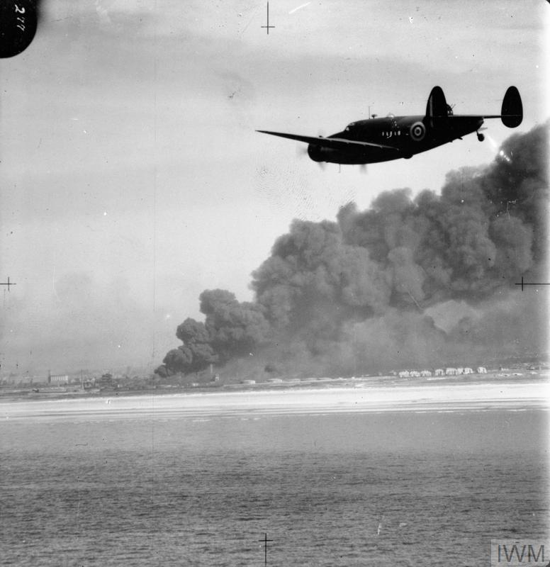

Earlier I posted a bare-bones, “just-the-facts” narrative of the Greer incident, from Samuel Eliot Morison’s account. Here are some more facts; as the Dude would say, “new shit has come to light.” Or rather, thanks to Inter-Library Loan, I received some new information that I’ve not seen cited in the standard accounts.

Morison says the British plane, an RAF Hudson, “dropped his depth charges more or less at random.” I did know that Greer was broadcasting the U-boat’s position, so that it wouldn’t have been all that random, but I hadn’t picked up on that in the account.
But there is also the question, often raised, of whether the U-boat commander saw the Greer; you usually read that we don’t know what he observed, or historians will impute behavior to him, as I quoted Waldo Heinrichs doing, saying the U-boat captain “must have regarded as hostile pursuit” the Greer’s continued following of the U-boat. Or consider Kenneth S. Davis’s account: “the harassed U-boat, its desperate commander probably believing the destroyer had made the depth-charge attack actually made by the British plane, suddenly fired a torpedo at the destroyer, then a second one, perhaps a third.”1
It did occur to me that someone might have sometime looked into the German records, and (again, thanks to ILL) I can now say the U-boat captain’s state of mind was not so clear as all that. Nor was the firing of the torpedo sudden.
The U-boat, U 652, under the command of Lieutenant Georg-Werner Fraatz, had been running on the surface, and then “dived after sighting an aircraft” (und hatte dann nach Sichten eines Flugzeuges getaucht,) according to Gerald E. Hasselwander, who was working with the war diaries (Kriegstachebücher) of U 652. So Fraatz, the U-boat captain, did know he was being pursued by an aircraft—although Hasselwander says that when the depth charges exploded, the crew believed they had come from the destroyer they could hear overhead (glaubte seine Besatzung, daß der Zerstörer, den sie über sich hören konnten, der Angreifer sei).2
After the two hours’ pursuit without further attack, Fraatz was somewhat confused; he could not understand what he called the destroyer’s “hesitant behavior.” (Der U-Bootkommandant konnte jedoch das „zögernde Verhalten” des Zerstörers nicht verstehen.) So he came to periscope depth and had a look at it. He might even have surfaced, Hasselwander says, had not the weather been so good and the high visibility thus a risk to him—he could see, now, another plane above the Greer. At this point, he fired two torpedoes at the destroyer.
Hasselwander says we don’t really know why those two hours passed before Fraatz fired on the destroyer. Maybe he didn’t have a clean shot. But maybe also he had “concerns” (Bedenken)—about what, Hasselwander doesn’t say; but one possible concern would be that the destroyer was certainly not acting like a British destroyer, which meant that it might belong to a neutral power, possibly the United States.3 Given what we know about the division in German thinking about a naval war against the United States at this time, we might suppose that this same division was reflected in Fraatz’s mind.